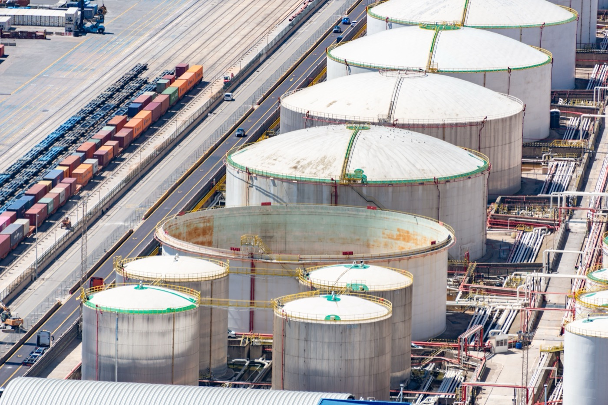

Специализирана фирма за почистване и дегазиране на резервоари за нефтопродукти, с дейност от 1995 година.
„Валент“ ЕООД е вписана в търговския регистър с решение № 2019 от 09.05.1995 г. на Варненския окръжен съд. От 1996 година фирмата извършва услуги по почистване на резервоари в петролни бази, на бензиностанции и на корабни горивни танкове.
Дейността обхваща приемане, съхранение и реализация на петролни продукти, транспортна дейност, както и събиране, транспортиране и временно съхраняване на опасни отпадъци — нефтоводни смеси, утайки и ръжда.
Работим на територията на цялата страна. Седалището и производствената база на фирмата се намират в гр. Аксаково, област Варна.

Обадете се за оглед и оферта. Работим на територията на цялата страна.